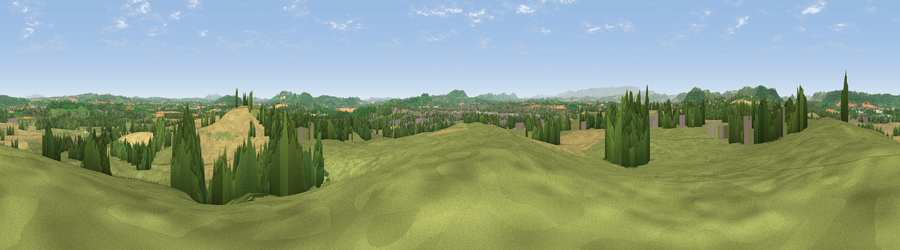

Viewpoint near Moreton on Lugg
#9827 in England · top 29% of its area beats it · near Moreton on LuggThe view, rendered

A 360° render of this exact spot computed from the terrain model, tree cover and land cover — summer colours, afternoon light, calibrated against photographs of famous viewpoints. Real trees, hedges and buildings will differ in detail.
The panorama
Grey silhouette: terrain skyline in each direction (720 bearings, Earth curvature and refraction included). Dashed green: skyline with trees (+15 m) and buildings (+8 m) as obstacles. Blue strip: how far the ground is visible on each bearing.
Where the view opens
Wedge length = distance to the farthest visible ground on that bearing (vegetation-aware). Rings at 10, 25 and 50 km.
What fills the view
53% grassland · 26% cropland · 16% woodland · 4% built-up
Angular shares of the visible panorama (visual magnitude), not map area. Landscape diversity 0.49 (0–1 Shannon).
Key numbers
More beautiful places nearby
The staircase of upgrades: each row has a higher view potential than everything closer. Driving times are estimates from straight-line distance, calibrated against real road routing — check an actual route before setting out.
| Place | Direction | Drive | Score |
|---|---|---|---|
| Viewpoint near Moreton on Lugg | E · 1 km | ~2 min | 64.5 |
| Viewpoint near Canon Pyon | NW · 6 km | ~13 min | 74.6 |
| Round Oak Hill | WNW · 7 km | ~14 min | 75.4 |
| Viewpoint near Westhope | NNW · 10 km | ~20 min | 77.0 |
| Seagar Hill | ESE · 11 km | ~21 min | 82.1 |
| Garway Hill | SSW · 20 km | ~34 min | 84.6 |
| Herefordshire Beacon | E · 25 km | ~41 min | 85.8 |
| Millennium Hill | E · 25 km | ~41 min | 86.9 |
52.08835, -2.71547 · source: screening · position refined by local search. Computed location — check access rights before visiting.